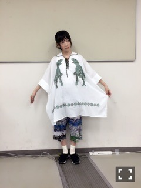

| 2016/05 30 Mon | 楽しい撮影なうなう |
昨日は幕張メッセで個別握手会がありました〜ヽ(・∀・)ノ
変わらず来てくれる皆様、
始めましての皆様、
ちびっ子達

皆さんとお話し出来て嬉しかったです〜ヽ(・∀・)ノ⭐️
テレビの私、ライブの私、握手会の私、
それぞれにいろんな私が居るけど、どの私にも変わらず入るのは日々周りの皆さんへの感謝の気持ち

ありがとうを伝えられて嬉しいです！！
あと、
じょしらくチームらにお花頂きました〜！

あやねちゃんは後の部だったから、全員集まれず(´；ω；｀)
でもお花の色が、それぞれのキャラクターのカラーに分かれてて、久しぶりにみんなそれぞれのキャラクターのポーズになってみたよん！！
ガンちゃん久しぶりっ

そして、
今回のお洋服は、久々自分の趣味ドストライクのお洋服でした〜ヽ(・∀・)ノ

恐竜〜
足元にコンセントある笑笑
gommeのお洋服です〜スキー
時々、趣味の服着させてねっ
今ね、めちゃ楽しい撮影の準備してるようヽ(・∀・)ノ
へばなっ☆彡
コメント(389)
2016/05/30 10:12